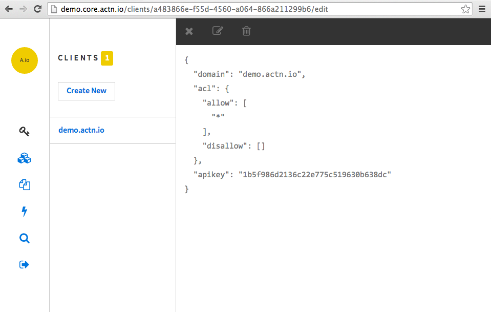
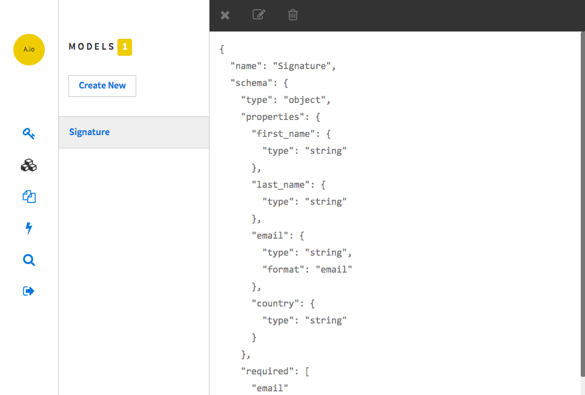

Read, write and query any data without limits and real time. Schedule hooks to run backend jobs and create user interfaces with HTML5
Actn.io is compound of a few micro services which built on Goliath and Postgresql PL/V8. Running on CoreOS.
Let's say you want to collect signatures for your online petition. But also you like to observe activities on your petition page and need to have meaningfull output from captured data. You also want that page in three languages. To achive that simple goal with Actn.io you need;
Demo app is already up and running on http://demo.actn.io and can be managed at http://demo.core.actn.io. Signin with demo@actn.io and password.
Client to communicate with Cors APIModel to validate and capture signature data properlyTemplate to render petition form in multiple languagesActn.io is modular and lets you consume it's API independently. In other words you can use it as a pure backend in your existing website or any other software.
Each client dedicated to only one domain but a single domain can have many clients. It is useful for seperating access control under same domain.
Client has two properties;
domain the domain which sends cross domain requestacl an array of access control list patterns for certain http verbs and paths. Eg: *, GET:/signatures, POST:/users, ...Client for demo.actn.io domain
Main purpose of a Client is authentication with Cors API, but you can consume REST API as well with apikey/secret credentials. However, Actn.io gives you a javascript client to make things a bit quicker, so you can immediately start playing with the API after creating a client. Simply add script tag below into your page and you're ready.
<script src="http://demo.api.actn.io/connect?apikey=YOUR_API_KEY"></script>
Model is base class for your custom models. It allows you to set validation rules (through JSON Schema), database indexes and hook jobs. Here is our Signature Model which we will use in our Demo App.
Model properties are;
name name of the model, cannot be change after creation and must be uniqueschema JSON schema for structure and validationsindexes array of indexeshooks dictionary of hooksSignature model
OK, I can hear that you like to see some action, sure! Here are some runnable javascript code examples;
Enough play? OK! Good, let's create a webpage with a form to provide more human interface for our petition.
Template is one and only user interface module in Actn.io at the moment. It allows you to create and serve html, css and javascript files, on the cloud. Don't be shy and mess with demo templates here. There are some examples of rendering with layout and data binding for multilingual templates.
Template properties are;
filename filename of the template, must be end with .erb, eg: index.html.erb, style.css.erblayout layout filename to render template within, "true" if the template itself is layoutdata_bind data binding options to fetch data before rendering template, the data will be available as data local variableActn.io provides two interfaces to access data, Live and Search
Live is a real time page with two different views. Table and line chart. Table view provides sorting and fast searching through freshly arriving records, as well as inline editing and deleting options. It uses Postgresql Listen/Notify API, websockets and actn-job gem. To see it in action run below script and goto Live page
Search provides advanced search with "primitive" domain spesific language, actualy a json object. But it allows users to run complex SQL queries. There are two chart views for search, Pie and Line. Click question mark icon on the page to get some help.
Demo example is not covering all the features of Actn.io, like hooks, indexing and data_binding, although it's a side project and still under development. Obviously many things are missing to use it in real life now. Anyway, it's performance is incredible but security concerns highly disregarded for now. If you like it, feel free to contribute and no need to say, all bug reports welcome.